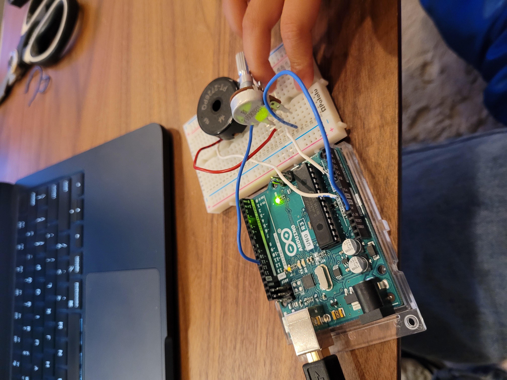

<br>
## 7: Electronic Output Devices
______________________________________________________________________________________
# Piezo Buzzer
<p>
I tried the piezo buzzer for the first time and played Fur Elise on it with this <a href="fur elise.html">CODE</a> .
</p>
# Next I incorporated the piezo buzzer with a potentiometer:
<center></center>
By doing this I was able to increase and decrease the volume of the buzzer using the porntiometer.
# Here is how it turned out:
<center><video width="620" controls>
<source src="20230723_204358.mp4" type="video/mp4">
</video></center>
# <p>
Here is the <a href="piezo pot 1.html">CODE</a> for that.
</p>